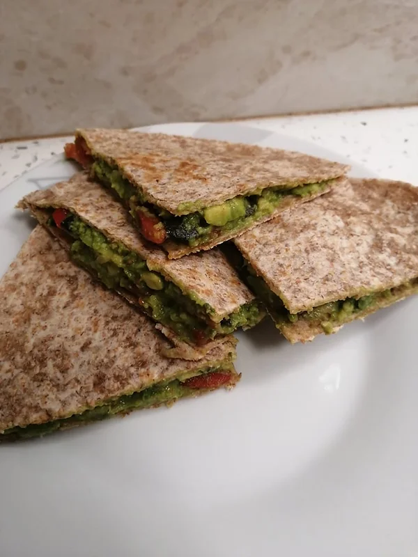

Quesadilha Vegetariana
Tempo de preparação
3min
Horas de Cozimento
5min
Tempo Total
8min
Porções
1

Ingredientes
- 2 wraps integrais
- 1 abacate esmagado
- 3 tomates cherrys cortados a meio
- sementes de abóbora q.b
- sal q.b
- pimenta preta q.b
- alho em pó q.b
- azeite q.b
- sumo de ½ limão
Instruções
- Numa tigela esmague o abacate com os tomates cherry e tempere com sal, pimenta preta, alho em pó, um fio de azeite e sumo de ½ limão. Misture sementes de abóbora ao preparado.
- Numa sertã aqueça os wraps dos dois lados.
- Prepare com um wrap por baixo, recheio e outro wrap por cima. Corte em quatro pedaços e acompanhe com o molho de sua preferência e umas batatas fritas!